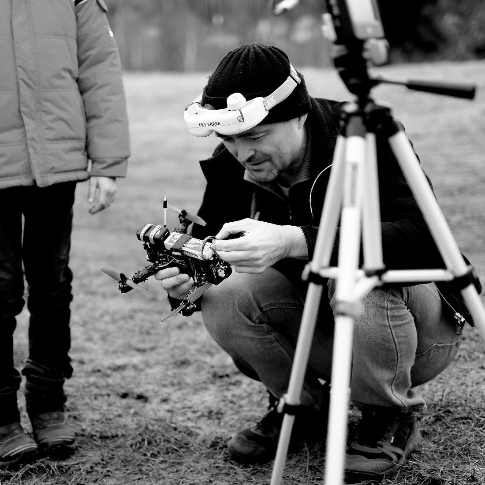

Klatovy 2018
Klatovy 2018 from jimmac on Vimeo.
Racing in Klatovy is always a pinnacle of the season. Not because it’s some prestigious event that will get you a lot of exposure, but because it’s super laid back. It’s where you meet with the whole...
About Me

I have never had any RC toy as a kid. It came much much later in my life that fell for these amazing machines. Just 2 years ago I saw this Firefly short and thought it's amazing this sort of cinematography can be achieved for relatively little. Later that year I have gotten a DJI Phantom. As it often pans out, that quad is now at the bottom of the Liberec dam. So it was the flying camera rig that slowly got me interested in FPV and the actual flight started to be more enjoyable than the shots/editing.
I am not an engineer, I don't enjoy the building part much. I just love flying. And because I had to go through all the pain of learning the dos and don'ts the hard way, I decided to put up this site to help other rookies have a more straight forward experience.
I have a 6 year old son, that slowly succumbs to my brainwashing and is flying line of sight. hopefully he'll be able to join me soon and we'll enjoy the flight together.